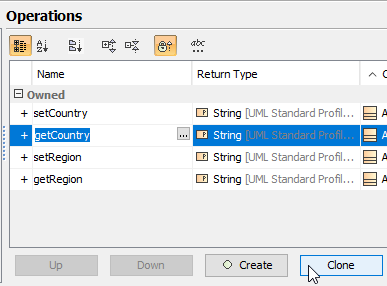

Cloning attributes and operations
- Open the Specification window of the element with the attribute/operation you want to clone.
- From the Specification window property group list, select the Attributes/Operations group.
- Select an attribute/operation and click the Clone button to create a copy.
